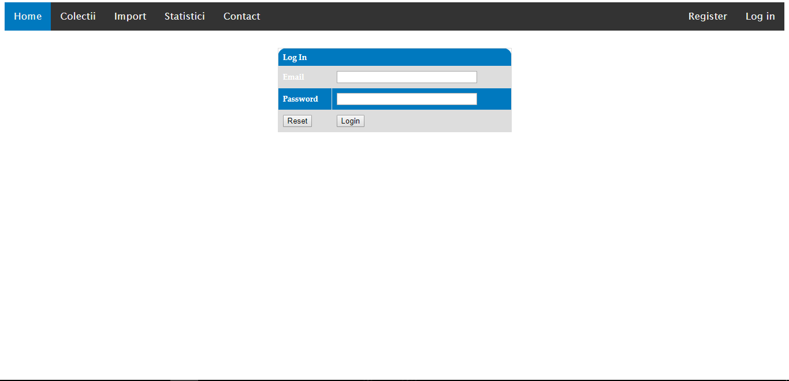

Ghid de utilizare Artifacty
Register
Inregistrare poate fi facuta accesand site-ul la adresa http://localhost:8081/
si dand click pe butonul Register.
In acest moment, va fi necesar sa se completeze formularul pentru inregistrare,
precizand username-ul, parola, confirmarea parolei, email-ul si grupul de interese.
Odata introduse aceste date, va trebui sa fie apasat butonul Submit form.

Login
Daca logarea este facuta, se poate face logarea in aplicatie accesand adresa site-ului
http://localhost:8081/"
si apasand butonul Login.

In acest moment va fi necesar sa completezi formularul de login, precizand email-ul si parola.
Odata introduse acestea, va trebui apasat butonul Login.

Home section
Pagina principala va contine descrierea proiectului:
Colectii section
Pagina Colectii va putea fi accesata, apasand butonul Colectii din meniul aplicatiei.
Odata selectata pagina colectii, se va afisa continutul acesteia. In acest moment, se va putea selecta
categoria dorita din dropdown-ul dorit si apasand butonul corespunzator.
Daca utilizatorul va dori o afisare in functie de localizare, acesta va selecta localizarea din dropdown-ul
respectiv si apoi va apasa butonul Dupa localizare. Daca va dori sa primeasca artefactele dintr-un
anumit tip, atunci va selecta din dropdown-ul respectiv si va apasa butonul Dupa tip, iar daca va dori
filtrarea dupa rol, va alege rolul dorit din dropdown si va apasa butonul Dupa rol.
Odata afisate artefactele dorite, se va putea alege oricare dintre ele prin apasarea butonului Go.

Pagina artefactului va contine detalii despre artefactul selectat.

Import section
Pagina Import va putea fi selectata, apasand butonul Import din meniu. In acel moment,
utilizatorul va fi redirectionat catre pagina Import care ii va oferi acestuia posibilitatea de
a adauga noi artefacte completand campurile corespunzatoare: Localizare, tip, rol, tip datare, secol,
denumire, descriere si link imagine. Odata introduse datele necesare, va trebui apasat butonul Submit
pentru a finaliza actiunea dorita.

Statistici section
Pagina Statistici va putea fi accesata, apasand butonul Statistici din meniu.
Aceasta pagina contine statistici referitoare la artefacte in functie de filtrarea dorita.
Daca doriti statistici in functie de localizare, apasati butonul Dupa localizare si
si vizualizati diagrama in partea din dreapta a paginii. Daca se doreste filtrarea dupa tip,
se va apasa butonul Dupa tip, iar pentru statistici in functie de rol se va apasa butonul
Dupa rol.